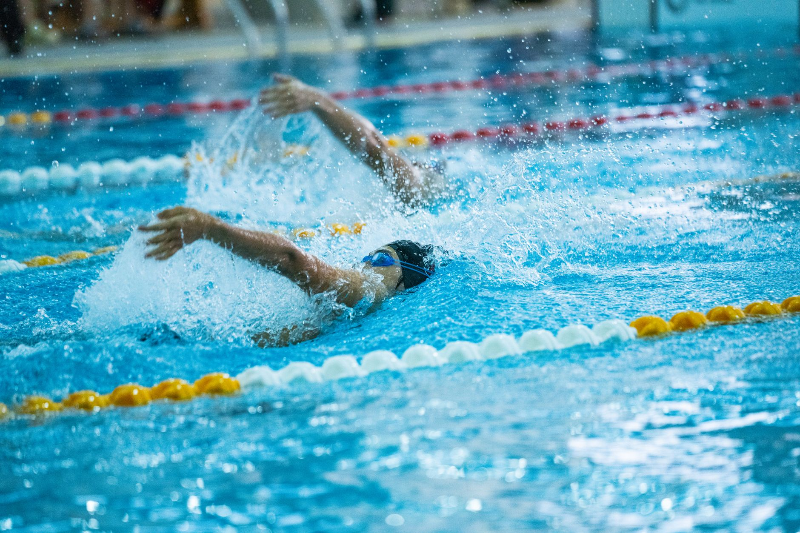

A Bronze Medal Moment Worth Celebrating
The swimming world recently celebrated an inspiring achievement when a young athlete earned a bronze medal in the 50 freestyle at the USA Swimming Speedo Junior National Championships. For families across the Tampa Bay area, news like this is more than just a headline — it is a reminder of what is possible when young swimmers commit to their craft and pursue excellence with patience and purpose.
Earning a medal at a national championship does not happen overnight. Behind every podium finish is a story built on early morning practices, consistent coaching, mental resilience, and a community that believes in the athlete. That story belongs not just to elite competitors, but to every young swimmer who steps onto the pool deck and decides to get better today than they were yesterday.
What Junior National Success Looks Like Up Close
The USA Swimming Speedo Junior National Championships is one of the most competitive youth swimming events in the country. Young athletes who qualify and compete at this level have typically spent years refining their technique, building their strength, and learning how to perform under pressure. A medal in the 50 freestyle — one of the fastest and most explosive events in the sport — reflects exceptional power, precision, and mental focus.
For parents of young swimmers in Wesley Chapel, Land O' Lakes, and the broader Tampa Bay area, it is worth understanding that athletes who reach this stage did not skip the fundamentals. They mastered them. The 50 free may last only about 20 seconds in the water, but the preparation behind it spans years of deliberate, structured training.
Three Lessons Every Young Swimmer Can Take from This Achievement
- Consistency beats intensity. National-level swimmers do not succeed because of one perfect practice. They succeed because they show up, day after day, and make steady improvements over time.
- Technique is the foundation. Before speed comes form. Young athletes who invest in learning proper stroke mechanics early in their development build the platform that makes elite performance possible later.
- Mindset matters as much as fitness. Racing at a national championship requires athletes to manage nerves, stay focused, and trust their preparation. Developing a strong mental game is just as important as physical conditioning.
How Local Swimmers Can Start Building Their Own Path
Not every young swimmer needs to have Olympic dreams to benefit from quality training and high expectations. Whether your child is just beginning to swim competitively or is working toward qualifying for regional and national events, the principles that drive national champions apply at every level of the sport.
At Nexar Aquatic Academy, we work with swimmers across Wesley Chapel and Land O' Lakes to build those principles from the ground up. Our coaches focus on stroke development, race strategy, and creating a training environment where young athletes feel both challenged and supported. We believe that every swimmer — regardless of age or experience level — deserves coaching that is intentional, informed, and encouraging.
Inspiration Is a Starting Point, Not a Destination
When a young swimmer stands on a national championship podium, it inspires others to dream bigger. But inspiration only becomes achievement when it is paired with action. If your child watched news like this and felt a spark, that spark deserves to be nurtured.
Encourage your young athlete to set a goal, talk to their coach, and commit to showing up. The pools in Tampa Bay are full of future champions — and their journey starts right here, in their own community, one lap at a time. Nexar Aquatic Academy is proud to be part of that journey for so many families in our area, and we look forward to celebrating the next generation of aquatic athletes as they find their own path to the podium.
Ready to get in the water?
First practice is completely FREE — no commitment needed.